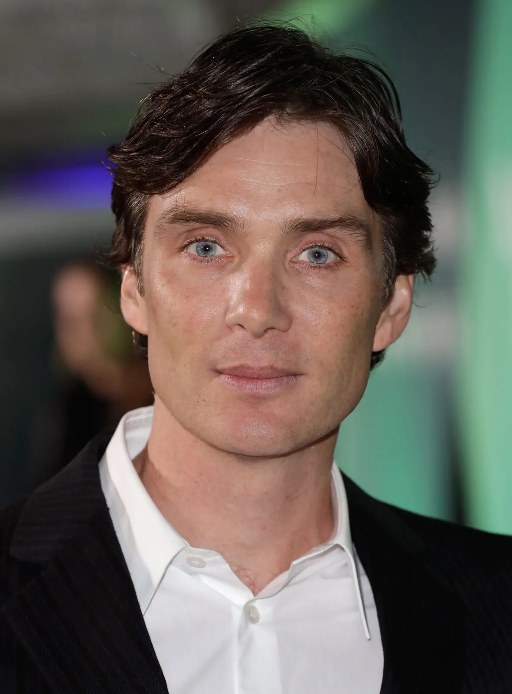
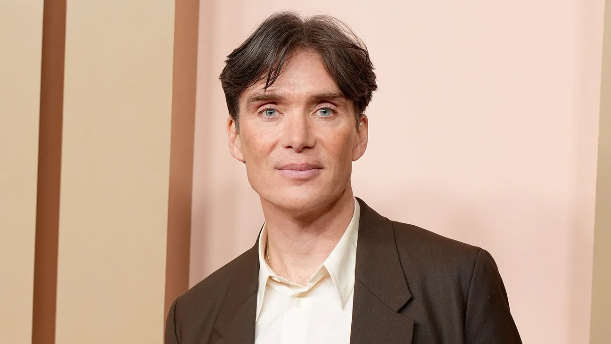

Биография
Килиан Мърфи е ирландски актьор, роден на 25 май 1976 г. в Дъглас, графство Корк, Ирландия. Известен е с ролите си в „Peaky Blinders“, „Inception“ и „Oppenheimer“. Кариерата му започва в театъра и продължава с участия в множество международни филми.
През 2024 г. печели наградата „Оскар“ за най-добра мъжка роля за изпълнението си на Дж. Робърт Опенхаймер във филма „Oppenheimer“. Известен е със своята отдаденост, внимание към детайла и скромност извън екрана.



Образование
| Период | Институция | Специалност | Бележки |
|---|---|---|---|
| 1994–1996 | University College Cork | Право | Напуснал, за да се посвети на актьорството |
| 1996–1997 | Corcadorca Theatre Company | Театър | Професионален дебют |
Професионален Опит
- 2013–2022: Главна роля в сериала Peaky Blinders
- 2023: Дж. Робърт Опенхаймер във филма Oppenheimer
- 2005–2012: Доктор Крейн / Плашилото в трилогията за Батман
Избрани Проекти


Награди И Признания
- Оскар – Най-добра мъжка роля (2024)
- Златен глобус – Най-добър актьор в драма (2024)
- BAFTA – Най-добър актьор (2024)
- Screen Actors Guild – Изключително изпълнение (2024)
Личен Живот
През 2004 г. се жени за дългогодишната си приятелка Ивон Макгинес, която е ирландска художничка и с която се запознава през 1996 г. по време на участие с музикалната си група. Живеят в Монкстаун, Дъблин заедно с двамата си синове Малаки (роден 2005) и Аран (роден 2007).
Мърфи често работи в или в градове около Дъблин и не е демонстрирал желание да се премести в Холивуд. Предпочита да не говори за личния си живот и не участва в никакви телевизионни предавания до 2010, когато е гост в The Late Late Show по ирландската телевизия RTE.
Мърфи не разчита на стилист, няма личен публицист, пътува без антураж и често присъства на премиери сам. Резервиран и с желание да запази личното си пространство.